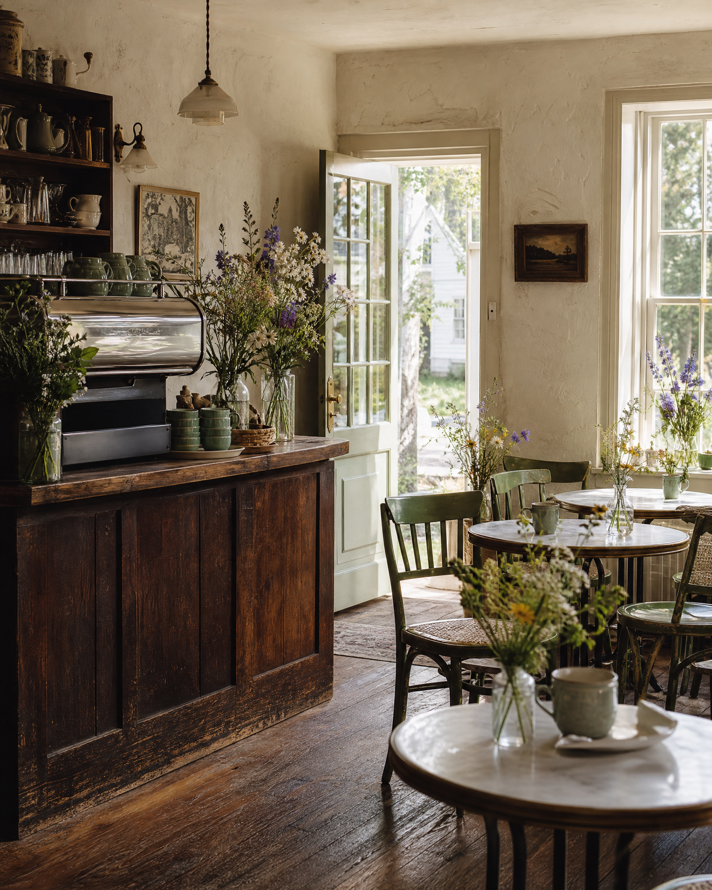
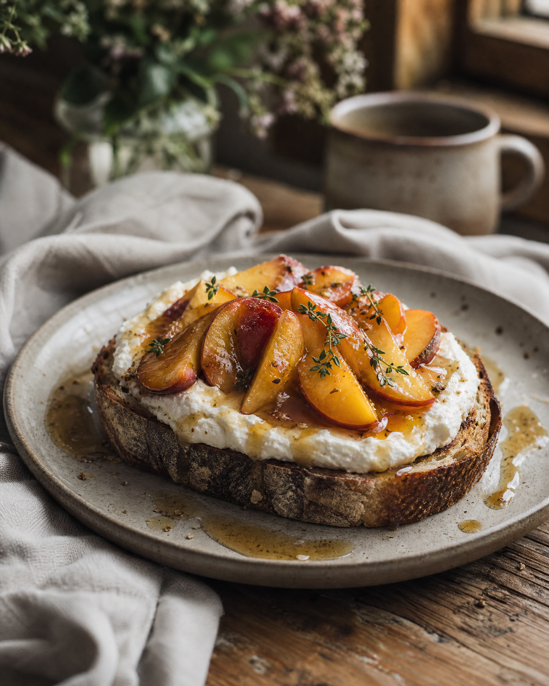

A neighborhood café for slow mornings, strong coffee, and food made with a little more care.
The Corner Cup is a small, sunny café tucked into the center of town. We make breakfast and lunch from scratch, work with our neighbors whenever we can, and believe the best meals don’t need to be fussy.
Think warm bread, bright eggs, very good coffee, and a table you don’t have to rush away from. Pull up a chair.
Find your way here →
A sunny little
We source eggs from down the road, bread from a baker we trust, and the best coffee we can find. The menu is familiar by design — just given room to shine.
“The kind of place you’ll want to keep to yourself.”
— A regular, probably